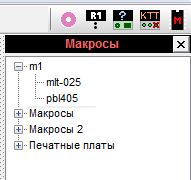
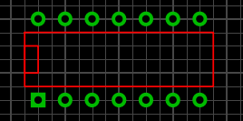
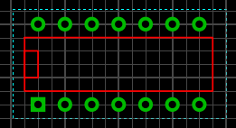
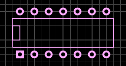

Sprint Layout 6. Создание макросов
Макрос - это сохраненный участок платы, готовый к дальнейшему повторному использованию. В Sprint Layout в виде макросов организована библиотека посадочных мест компонентов.
После запуска программы по умолчанию справа открыта панель макросов. Открытием/закрытием этой панели управляет кнопка на панели инструментов в правой части окна.

Рис. 1 - Панель макросов
Процесс создания макроса состоит нескольких шагов:
- Расстановка контактов.
- Рисование графики для слоя маркировки.
- Сохранение макроса в в отдельный файл на диске.
При созданием макроса используются слои меди (Ф1, Ф2) для контактных площадок и проводников и слои шелкографии (Ш1, Ш2) для нанесения линий проекции корпуса компонента. Нанесение проекции корпуса осуществляется простейшими графическими элементами (линия, окружность и т.п.) в слое шелкографии.
Пример:Требуется создать макрос для корпуса DIP с 14-ю выводами.
1. Создание графического образа
На слой Ф2 (нижняя сторона) наносятся 14 контактных площадок по заданной сетке (шаг сетки соответствует шагу выводов). Для идентификации первого вывода его площадку можно сделать квадратной.
Теперь следует сделать активным слой Ш1 (шелкография, верх) и нанести контур корпуса, используя команды нанесения графики. Дополнительно можно обозначить вырез на корпусе для лучшей визуализации.

Рис. 2 - Создание графического образа микросхемы
2. Выделение элементов макроса
Выбрать курсором точку на рабочем поле, нажать левую кнопку мышки и, удерживая ее, обозначить область выделения. При этом следует наблюдать, чтобы в выбранную область попали только те элементы, из которых строится макрос.

Выделенные элементы приобретут розовый цвет.

3. Сохранение макроса
Для сохранения макроса следует выбрать Сохранить как макрос... в меню Файл.
Такая же команда выполняется при нажатии кнопки сохранения на панели библиотеки.
При этом откроется диалоговое окно. Директория сохранения в нем соответствует текущему разделу библиотеки. Если требуется сохранить макрос в другом разделе, следует произвести соответствующий выбор раздела.
Макросу необходимо присвоить допустимое имя. Расширение файла макроса .lmk (присваивается по умолчанию всем макросам) будет добавлено автоматически.
После сохранения макроса он будет добавлен в выбранный раздел библиотеки.
Источники
cxem.net - Sprint Layout 6. Часть 2 - Функции рисования. Макросы и библиотека компонентов